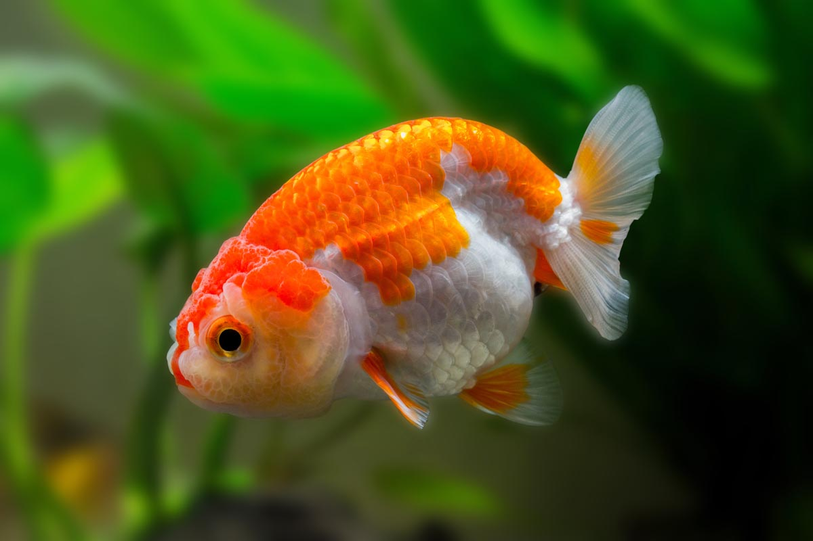

Sistem Pakar Kualitas Air untuk Ikan Mas Koki yang Sehat
Pelajari Standar Kualitas Air yang Ideal untuk Ikan Mas Koki Anda


Panduan Pemeliharaan Ikan Mas Koki
1. Menyiapkan Kolam atau Akuarium yang Sesuai
Pastikan kolam atau akuarium yang sedang kamu gunakan memiliki ukuran yang memadai untuk ikan mas koki.
2. Pastikan Kualitas Air yang Baik
Perlu kamu ketahui bahwa dengan kualitas air yang baik dapat menunjang kualitas hidup mereka dan tetap sehat untuk beraktivitas.
3. Rutin Mengganti Air Akuarium
Idealnya, Anda melakukan penggantian setengah jumlah air akuarium setiap seminggu sekali serta mengganti seluruh air akuarium setiap sebulan sekali.
4. Nutrisi yang Seimbang
Nutrisi seimbang adalah salah satu aspek penting dalam menjaga daya tahan tubuh ikan mas koki. Kamu harus perhatikan makanan yang sesuai dengan kebutuhannya.
5. Perawatan Kesehatan
Selalu peka dan perhatikan perilaku mereka serta melihat perubahan apa yang terjadi. Di samping itu, tetap disiplin dalam mementingkan nutrisi serta nafsu makan mereka dan Lakukan pencegahan penyakit jika ada ikan baru yang ingin dimasukkan dalam koloni.
6. Kehidupan Lingkungan yang Menyehatkan
Pastikan lingkungan di sekitar kolam atau akuarium selalu bersih. Perhatikan dengan baik kestabilan suhu di dalam kolam atau akuarium dan hindari melakukan perubahan yang tiba-tiba sehingga dapat membuat ikan menjadi stres.